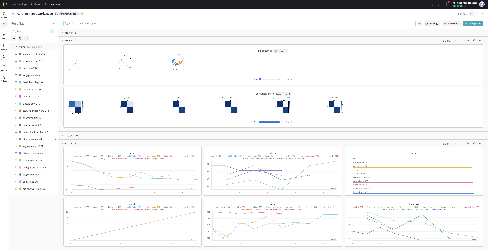
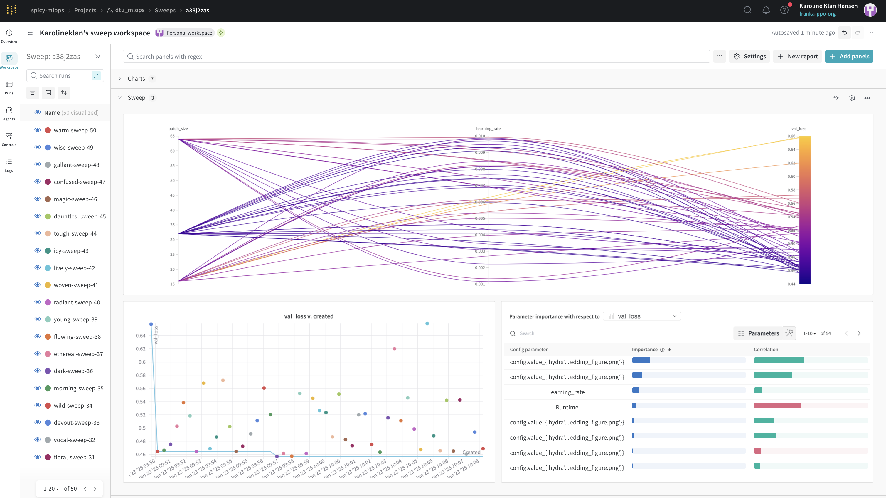
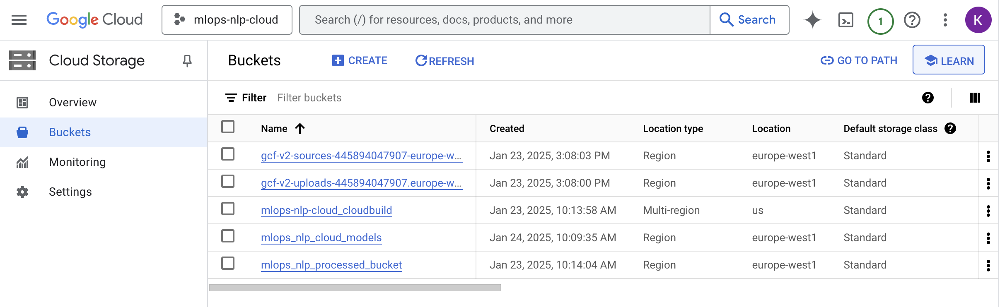
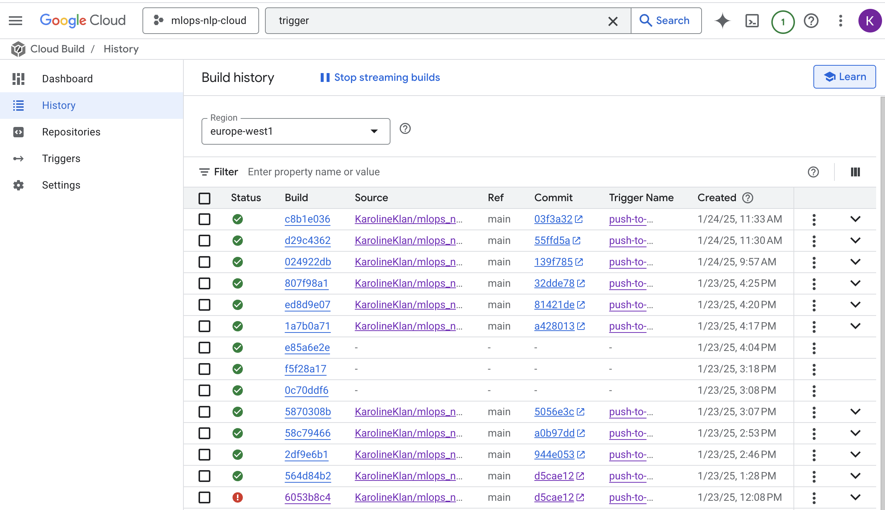
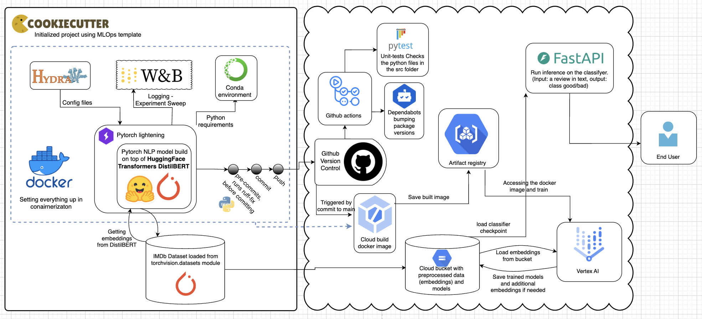

{kind=link}
{kind=link}
{kind=link}

Operations
This is the report template for the exam. Please only remove the text formatted as with three dashes in front and behind like:
--- question 1 fill here ---
Where you instead should add your answers. Any other changes may have unwanted consequences when your report is
auto-generated at the end of the course. For questions where you are asked to include images, start by adding the image
to the figures subfolder (please only use .png, .jpg or .jpeg) and then add the following code in your answer:
markdown

In addition to this markdown file, we also provide the report.py script that provides two utility functions:
Running:
bash
python report.py html
Will generate a .html page of your report. After the deadline for answering this template, we will auto-scrape
everything in this reports folder and then use this utility to generate a .html page that will be your serve
as your final hand-in.
Running
bash
python report.py check
Will check your answers in this template against the constraints listed for each question e.g. is your answer too short, too long, or have you included an image when asked. For both functions to work you mustn't rename anything. The script has two dependencies that can be installed with
bash
pip install typer markdown
The checklist is exhaustive which means that it includes everything that you could do on the project included in the curriculum in this course. Therefore, we do not expect at all that you have checked all boxes at the end of the project. The parenthesis at the end indicates what module the bullet point is related to. Please be honest in your answers, we will check the repositories and the code to verify your answers.
data.py file such that it downloads whatever data you need and preprocesses it (if necessary) (M6)model.py and a training procedure to train.py and get that running (M6)requirements.txt and requirements_dev.txt file with whatever dependencies that you
are using (M2+M6)pep8) while doing the project (M7)Enter the group number you signed up on
Answer:
42
Enter the study number for each member in the group
Example:
sXXXXXX, sXXXXXX, sXXXXXX
Answer:
s214638, s204052, s214596, s214609, s214696
A requirement to the project is that you include a third-party package not covered in the course. What framework did you choose to work with and did it help you complete the project?
Recommended answer length: 100-200 words.
Example: We used the third-party framework ... in our project. We used functionality ... and functionality ... from the package to do ... and ... in our project.
Answer:
We used the transformers package from hugging face to do preprocessing on our data. More specifically we used the "distilbert-base-uncased" model including the appropriate tokenizer to create embeddings of the text data. These embeddings were then saved in the "data/processed" directory. Using this model to get embeddings of the text from the IMDb dataset enable to effectively capture the semantic meaning of the text and this made it possible to make a very simple classifier with only two layers and still get a fairly high accuracy score. Furthermore, the use of pre-trained models significantly reduced the computational resources and time required for training leaving us to focus more on the implementations of the MLOps related stuff.
In the following section we are interested in learning more about you local development environment. This includes how you managed dependencies, the structure of your code and how you managed code quality.
Explain how you managed dependencies in your project? Explain the process a new team member would have to go through to get an exact copy of your environment.
Recommended answer length: 100-200 words
Example: We used ... for managing our dependencies. The list of dependencies was auto-generated using ... . To get a complete copy of our development environment, one would have to run the following commands
Answer:
We use requirements files to manage packages via. conda for running the training code and to develop on the project. A developer would need to first clone the repository and then pip install both the "requirements.txt" and "requirements_dev.txt". In the readme, there is a step-by-step instruction for running the code, consisting of installing invoke and invoking a "Create environment"-task and "Install requirements"-task. This installs both requirements files. Hereafter one needs to run "pre-commit install" to activate pre-commits. Furthermore, we have also created docker images with docker files that are deployed in the cloud, which enables a consistent and reproducible environment for all developers. In these docker files the environments are also setup uding the requirements files. Setting it up like this ensure that environments on different computers/setups are identical, reducing the chance of issures related to specific package versions etc.
We expect that you initialized your project using the cookiecutter template. Explain the overall structure of your code. What did you fill out? Did you deviate from the template in some way?
Recommended answer length: 100-200 words
Example: From the cookiecutter template we have filled out the ... , ... and ... folder. We have removed the ... folder because we did not use any ... in our project. We have added an ... folder that contains ... for running our experiments.
Answer:
We used most of the cookiecutter template. The nlp-model-specific code including data preprocessing, training and visualizations are in the src/nlp folder. The only folder we have removed is the notebooks folder. We have extended the config implementation to have several config files for different experiments, one that runs a simple fast experiment (exp1) and one that runs a hyperparameter tuning sweep of the model parameters (exp2). Furthermore, as data version control we save a data_config file with our preprocessed data to always be sure what data we are using for specific experiments in regards to the seed and size. There is a test_script for the API files that we had added because the intention was to use it for testing the API - but because of a lot of debugging in the cloud we did not manage to get this far with our project setup, meaning that this file is empty.
Did you implement any rules for code quality and format? What about typing and documentation? Additionally, explain with your own words why these concepts matters in larger projects.
Recommended answer length: 100-200 words.
Example: We used ... for linting and ... for formatting. We also used ... for typing and ... for documentation. These concepts are important in larger projects because ... . For example, typing ...
Answer:
We implemented a pre-commit hook that automatically run the linting step ruff --fix and ruff --formatter before comitting any code. We thought it was a nice thing to introduce in a precommit to ensure that all code pushed to the repo in would be nicely formatted following best practice linting rules. By using linting rules at the pre-commit stage, you ensure that all developers adhere to the same coding standards before code is committed. This maintains a consistent codebase and reduces the load on the CI system. We tried implementing typing to every fuction on our own, however a better practice than that would be to use a package like mypy for static type checking. This helps catch type-related errors early and improves code readability and maintainability. We used the MKdocs package to create documentation for the project. We made it work and documented the train.py code and the data.py code however more time was not priotized on making it fully publicible. In the real world this is really important to have when working on larger project for knowledge sharing, onboarding of new employees, consistecy and maintanance among other things.
In the following section we are interested in how version control was used in your project during development to corporate and increase the quality of your code.
How many tests did you implement and what are they testing in your code?
Recommended answer length: 50-100 words.
Example: In total we have implemented X tests. Primarily we are testing ... and ... as these the most critical parts of our application but also ... .
Answer:
We implemented 5 tests for data.py that primarily test the initialization of the datasets, ensuring that the train, validation, and test datasets are correctly populated and that the embeddings have size 768 and labels meet the expected criteria being 0 or 1. Additionally we implemented a test for model.py that verifys the input and output dimensions of the forwad passes. We also added test for the rest of the files in the source code except train.py.
What is the total code coverage (in percentage) of your code? If your code had a code coverage of 100% (or close to), would you still trust it to be error free? Explain you reasoning.
Recommended answer length: 100-200 words.
Example: The total code coverage of code is X%, which includes all our source code. We are far from 100% coverage of our ** code and even if we were then...*
Answer:
The total code coverage of our code is 67%, which includes all our source code files except train.py. While achieving 100% code coverage would indicate that every line of code is executed during testing, it does not necessarily mean that the code is error-free. Code coverage primarily measures the extent to which the codebase is tested, but it does not guarantee the quality or accuracy of the tests themselves. Even with high coverage, critical issues might still exist due to untested edge cases. Additionally, external dependencies, unexpected inputs, or integration issues may also introduce errors that are not covered by unit tests. Therefore, while aiming for high coverage is important, ensuring that the tests are meaningful and comprehensive is more critical for building a reliable system.
Did you workflow include using branches and pull requests? If yes, explain how. If not, explain how branches and pull request can help improve version control.
Recommended answer length: 100-200 words.
Example: We made use of both branches and PRs in our project. In our group, each member had an branch that they worked on in addition to the main branch. To merge code we ...
Answer:
We used branches and pull requests extensively. Since we worked concurrently on the project we created separate branches for coding different sections of the project. We had one branch called development, and then treated our main branch as the production branch. When a branch for development was done and tested, we merged it into main. This made it possible for us to always have working code even when fixing multiple issues at the same time. We opened new branches for new features being developed such as visulization add ons, dockerimagebuild and report writing - just to mention a few of the examples. Furthermore, if issues arose we could go back to a previous version where the code was running seamlessly.
Did you use DVC for managing data in your project? If yes, then how did it improve your project to have version control of your data. If no, explain a case where it would be beneficial to have version control of your data.
Recommended answer length: 100-200 words.
Example: We did make use of DVC in the following way: ... . In the end it helped us in ... for controlling ... part of our pipeline
Answer:
We used a sort of "homemade" DVC. We trained on subsets of the dataset and kept track on which data was being used by tracking the size and seed used to extract the subset. Our data pipeline included preprocessing the data and saving these embeddings along with a data_config.yaml file tracking the size and seed. This way we can skip preprocessing every time if the consequtive trainings use the same data set. If we did not do this, there would be no way to reproduce a training and the results of the project would be unreliable. Additionally the embedded data is pushed to a cloud bucket for easier acess from the other cloud services. As a part of this process the classic DVC package was initialized, but it was not used henceforth.
Discuss you continuous integration setup. What kind of continuous integration are you running (unittesting, linting, etc.)? Do you test multiple operating systems, Python version etc. Do you make use of caching? Feel free to insert a link to one of your GitHub actions workflow.
Recommended answer length: 200-300 words.
Example: We have organized our continuous integration into 3 separate files: one for doing ..., one for running ... testing and one for running ... . In particular for our ..., we used ... .An example of a triggered workflow can be seen here:
Answer:
For our continuous integration setup we have, as previously also described, a pre-commit-hook that check the following linting steps before comitting: trailing-whitespace, end-of-file-fixer, check-yaml, check-added-large-files, ruff-fix and ruff-format. This is done every time a commit added to the main branch. Besides this we have made a unittest workflow that runs the unit-tests on three different operating systems and two different python versions. Besides this, we have made a unittest workflow that runs the unit tests on three different operating systems (Windows, macOS, and Ubuntu) and two different Python versions (3.11 and 3.12). This ensures that our code is compatible across multiple environments. We also use caching to speed up our CI workflows. For eksample, we cache the dependencies installed via pip to avoid re-downloading them on every run. A successful run can be seen here. Additionally we have setup a trigger in the cloud that when pushing something to the main branch it automatically builds a new docker image in the artifact registry. Lastly the dependabot.yaml file configures Dependabot to automatically check for updates to Python dependencies managed by pip and GitHub Actions workflows. It is set to run these checks monthly and will create pull requests for any update it finds. This helps ensure that your project dependencies remain up to date and secure.
In the following section we are interested in learning more about the experimental setup for running your code and especially the reproducibility of your experiments.
How did you configure experiments? Did you make use of config files? Explain with coding examples of how you would run a experiment.
Recommended answer length: 50-100 words.
Example: We used a simple argparser, that worked in the following way: Python my_script.py --lr 1e-3 --batch_size 25
Answer:
We use hydra to parse a config file into a training function. The config files are located in a configs folder and contain an overall config file and several experiment config files. Depending on an experiment argument parsed in the command line the appropriate experiment configurations are loaded. An example usage is:
invoke train which runs a simple experiment using the excact specified hyper-parameters in exp1.yaml file. Running the commandinvoke train --experiment=exp2 will run an experiment doing hyper-parameter sweep on W&B.
Reproducibility of experiments are important. Related to the last question, how did you secure that no information is lost when running experiments and that your experiments are reproducible?
Recommended answer length: 100-200 words.
Example: We made use of config files. Whenever an experiment is run the following happens: ... . To reproduce an experiment one would have to do ...
Answer:
The config is always passed to weights and biases project and is saved with each run. So we can always see exaclty which hyperparameters and data configurations produced the experiment results by inspecting the wandb run. To reproduce the experiment one would have to copy the configurations into a config file in the configs/experiment folder and call the experiment when invoking the training. Additionally a seed should always be set in order to ensure that any random processes are reproducible. We also save the preprocessed data along with a data_config.yaml file that tracks the size and seed used. This way, we can skip preprocessing if consecutive trainings use the same dataset, ensuring that the same data is used acrosss different runs. This setup ensures that no information is lost and that experiments can be reliably reproduced.
Upload 1 to 3 screenshots that show the experiments that you have done in W&B (or another experiment tracking service of your choice). This may include loss graphs, logged images, hyperparameter sweeps etc. You can take inspiration from this figure. Explain what metrics you are tracking and why they are important.
Recommended answer length: 200-300 words + 1 to 3 screenshots.
Example: As seen in the first image when have tracked ... and ... which both inform us about ... in our experiments. As seen in the second image we are also tracking ... and ...
Answer:
As seen in the first image we are logging a vararity of things when running experiments into a wandb_project called "dtu_mlops" and a wandb_team called "spicy-mlops". The first experiment is a simple run training the model for 10 epochs, logging standard graphs such as training loss, validation loss as well as train accuracy and validation accuracy. By tracking training and validation loss, we can see how well the model is learning and if it is overfitting or underfitting, and doing it in wandb makes it easy to share with collaborators. We are also logging test-metrics and custom graphs being a confusion matrix for each run as well as a t-SNE visualization of the embeddings collected from the last layer in the network to visually represent the partitioning of the two classes.  We also demonstrate how easy it is to share specific run logs by creating a simple report: Experiment 1 - example W&B report In experiment 2 we run a hyperparameter sweep that tests different batch sizes and learning rates. From image 2 we see that batch size affects the modelperformance a bit more than learning rate, as we get lower validatoion loss using batchsize 32 than 64 for example: 
Docker is an important tool for creating containerized applications. Explain how you used docker in your experiments/project? Include how you would run your docker images and include a link to one of your docker files.
Recommended answer length: 100-200 words.
Example: For our project we developed several images: one for training, inference and deployment. For example to run the training docker image:
docker run trainer:latest lr=1e-3 batch_size=64. Link to docker file:Answer:
For our project, we developed a Docker image to containerize the training process, ensuring consistency and portability across different environments. The Dockerfile for the training setup (train.dockerfile) starts with a lightweight Python 3.11-slim base image and installs necessary dependencies, including build tools and Python packages, specified in requirements.txt and requirements_dev.txt. The source code, configuration files, models, and reports are copied into the container, enabling it to execute the training script using the command ´docker run train:latest´. The training script’s parameters, such as hyperparameters and paths, are managed through a centralized configuration file using Hydra, so no arguments are passed directly to the container. Link to dockerfile: train.dockerfile
When running into bugs while trying to run your experiments, how did you perform debugging? Additionally, did you try to profile your code or do you think it is already perfect?
Recommended answer length: 100-200 words.
Example: Debugging method was dependent on group member. Some just used ... and others used ... . We did a single profiling run of our main code at some point that showed ...
Answer:
Debugging method was dependent on group members. All of us use the visual studio code IDE, and some of the group members were confident in using the built-in debugger to set breakpoints and step through the code. This allowed them to pinpoint the exact locations where errors occurred and inspect variables in real-time. Others relied on print statements. In some files loguro was used to create structured loggings to track the flow of execution. We did not use profiling for this project as efforts were put elsewhere in getting everything working together. However, this approach is beneficial in identifying performance bottlenecks, such as inefficient code blocks, excessive memory usage, or slow-loading data pipelines, and given more time we could have looked into this.
In the following section we would like to know more about your experience when developing in the cloud.
List all the GCP services that you made use of in your project and shortly explain what each service does?
Recommended answer length: 50-200 words.
Example: We used the following two services: Engine and Bucket. Engine is used for... and Bucket is used for...
Answer:
We used the following services: - cloud bucket: that stores the preprocessed data embeddings as well as the saved model. - cloud build: is automatically triggered when someone pushes to the main branch, and then is builds an docker image and saves it in the artifact registry. - Artifact registry: stores the Docker images built by Cloud Build. It acts as a centralized repository for our container images, making it easy to manage and deploy them across different environments. - Vertex AI: Vertex AI uses virtual machines to provide the computational resources needed for training and deploying the machine learning model.
The backbone of GCP is the Compute engine. Explained how you made use of this service and what type of VMs you used?
Recommended answer length: 100-200 words.
Example: We used the compute engine to run our ... . We used instances with the following hardware: ... and we started the using a custom container: ...
Answer:
We used the Google Cloud Platform’s compute engine as the basis of running the training in the cloud through Vertex AI which will be explained in further detail in a later question. For this we used a virtual machine of machine type n1-highmem-2 ( 2 vCPUs and 13 GB of memory). The virtual machine has a replica count of 1 meaning it uses a single instance for the job. This is a cost effective virtual machine that is sufficient for the lightweight training we are using it for. For harder training jobs or larger hyperparameter sweeping, one could choose to use a virtual machine with higher class CPUs or GPUs.
Insert 1-2 images of your GCP bucket, such that we can see what data you have stored in it. You can take inspiration from this figure.
Answer:

Upload 1-2 images of your GCP artifact registry, such that we can see the different docker images that you have stored. You can take inspiration from this figure.
Answer:
Upload 1-2 images of your GCP cloud build history, so we can see the history of the images that have been build in your project. You can take inspiration from this figure.
Answer:

Did you manage to train your model in the cloud using either the Engine or Vertex AI? If yes, explain how you did it. If not, describe why.
Recommended answer length: 100-200 words.
Example: We managed to train our model in the cloud using the Engine. We did this by ... . The reason we choose the Engine was because ...
Answer:
To train our model in the cloud we used Vertex AI such that we through one custom job can train the model in the cloud. The custom job does the following: Creates the specific virtual machine we want, which is specified in the config file config_cpu.yaml, and start the virtual machine. Loads the latest docker container (automatically build through a trigger each time updates are pushed to our main branch) from our artifact registry. Finally, it runs everything and uploads all results to WANDB. It should additionally be mentioned that our config_cpu.yaml file includes a WANDB API key to authenticate WANDB. For better practice, this could be done through the gcp secrets manager.
Did you manage to write an API for your model? If yes, explain how you did it and if you did anything special. If not, explain how you would do it.
Recommended answer length: 100-200 words.
Example: We did manage to write an API for our model. We used FastAPI to do this. We did this by ... . We also added ... to the API to make it more ...
Answer:
Using FastAPI we managed to write an API for the model. The API takes an input string, creates the embeddings through the huggingface DistilBERT model, and passes them to the trained model from the model checkpoint saved in the GCP bucket. The output from the API is the classification of the input movie review as either “positive” or “negative.”
The API is designed using the lifespan handler such that it loads the used models on startup and performs a cleanup by deleting the embeddings, tokenizers, classifier and device on shutdown. The app uses MPS when available, if not it uses CPU.
Did you manage to deploy your API, either in locally or cloud? If not, describe why. If yes, describe how and preferably how you invoke your deployed service?
Recommended answer length: 100-200 words.
Example: For deployment we wrapped our model into application using ... . We first tried locally serving the model, which worked. Afterwards we deployed it in the cloud, using ... . To invoke the service an user would call
curl -X POST -F "file=@file.json"<weburl>Answer:
We choose to deploy the API in the cloud. This was done by creating a docker container in the GCP artifact registry and deploying a service via cloud run. To use the API an end user can access the simple UI through the docs page of the API through the link below:
The user can then input the movie review and get the classification whether it was positive or negative. Using the docs page is an easy way to test our API but if we had more time we would have liked to make a frontend to make the API more accessible and easier to use for the user using a streamlit application
Did you perform any unit testing and load testing of your API? If yes, explain how you did it and what results for the load testing did you get. If not, explain how you would do it.
Recommended answer length: 100-200 words.
Example: For unit testing we used ... and for load testing we used ... . The results of the load testing showed that ... before the service crashed.
Answer:
No we did not perform unit testing or load testing on the API due to time constraints. If we were to do so we would implement the unit testing via pytest. These could ensure that the input to the API is correct by checking that the type is “string” or that the model is correctly loaded from from the GCP bucket. For load testing we would use the locust framework to simulate a number of users, and check how the API reponds to this demand, what the average response time is and how many requests per second the API can handle.
Did you manage to implement monitoring of your deployed model? If yes, explain how it works. If not, explain how monitoring would help the longevity of your application.
Recommended answer length: 100-200 words.
Example: We did not manage to implement monitoring. We would like to have monitoring implemented such that over time we could measure ... and ... that would inform us about this ... behaviour of our application.
Answer:
We did not manage to implement monitoring for our deployed model in this project. However, implementing monitoring would allow us to track key metrics such as response time, and system resources usage over time, which would providing insights into the health of the system. For our specific setup detecting data drifting is not very useful as we have all the training and test data available from the beginning. If we tracked all inputs to the API in a database, it would be relevant to detect datadrifting through a framework like Evidently by continuously comparing the input data distributions and model outputs to historical baselines.
In the following section we would like you to think about the general structure of your project.
How many credits did you end up using during the project and what service was most expensive? In general what do you think about working in the cloud?
Recommended answer length: 100-200 words.
Example: Group member 1 used ..., Group member 2 used ..., in total ... credits was spend during development. The service costing the most was ... due to ... . Working in the cloud was ...
Answer:
During the course of the project, the total credits used amounted to $4.97 worth of Google Cloud credits. The most expensive service was the Container Registry Vulnerability Scanning, which accounted for $3.38. The Compute Engine and Vertex AI incurred costs of $1.32 and $0.08, respectively. Because our projecs is able to train faily fast on CPU and using the Vertex AI means that the compute is automatically turned on when used and off when not used, resulted in not spending all $50 credits. If instead we had chosen to setup and train on a GPU the cost would likely have been higher.
Did you implement anything extra in your project that is not covered by other questions? Maybe you implemented a frontend for your API, use extra version control features, a drift detection service, a kubernetes cluster etc. If yes, explain what you did and why.
Recommended answer length: 0-200 words.
Example: We implemented a frontend for our API. We did this because we wanted to show the user ... . The frontend was implemented using ...
Answer:
No - we looked into trying to make a front-end but did not manage witin the timeframe :)
Include a figure that describes the overall architecture of your system and what services that you make use of. You can take inspiration from this figure. Additionally, in your own words, explain the overall steps in figure.
Recommended answer length: 200-400 words
Example:
The starting point of the diagram is our local setup, where we integrated ... and ... and ... into our code. Whenever we commit code and push to GitHub, it auto triggers ... and ... . From there the diagram shows ...
Answer:

The local setup (squared box): The initial repo was setup using the cookie cutter template. TThe source code is organized within the src/ folder and includes key functionalities like data preprocessing using HuggingFace Transformers’ DistilBERT model. This model generates embeddings from the IMDB dataset, which is loaded via the PyTorch torchvision.datasets module. The local development environment integrates several tools: - Hydra is used to manage configurations for data paths, model hyperparameters, and other settings. - Weights & Biases (W&B) logs experiment metrics and manages hyperparameter sweeps. - Conda is used for managing Python dependencies in a virtual environment. - Docker containerizes the project, ensuring consistent environments across local and cloud setups. - A pre-commit hook runs tools like Ruff to ensure code quality and formatting before committing.
Once code changes are committed and pushed to GitHub, GitHub Actions is triggered (cloud box on the right). It runs: - Unit tests with Pytest. - Dependabot to check and bump package versions for consistent dependency management.
The processed embeddings and models are saved in a Google Cloud Storage Bucket. A trigger is setup to start cloud build when anything is pushed to the main branch and then the images are saved into the artifact registry. These artifacts can be deployed to Vertex AI that utilizes the embeddings to train the models using virtual machines. Fast API enables access to the models in the bucket which serves as the interface for running inference on the trained classifier - as also seen in the ealier question.
Discuss the overall struggles of the project. Where did you spend most time and what did you do to overcome these challenges?
Recommended answer length: 200-400 words.
Example: The biggest challenges in the project was using ... tool to do ... . The reason for this was ...
Answer:
The biggest struggle of the project has been to get every different aspects of the project and packages/components working together. Weights and Biases authentications has been a struggle when getting the API keys working in the cloud and in a collaborative team. Being many people working on different parts resulted in frequent conflicts when merging branches and it required significant coordination and comunication when managing who was working on which parts. Additionally, deploying the project to the cloud introduced issues with a lot of different authentications across different services - especially getting the cloud trigger up and running correctly with github and getting the Vertex AI engine runnning using the artifacts. Managing credentials while ensuring security and accessibility for the team, required extra effort trying to navigate in a totally new user interface. The slow build times of the Docker images also presented a significant challenge during the project as it often disrupted our workflow, particularly when frequent iterations or debugging were needed. Each small adjustment to the Docker configuration or application code resulted in extended waiting times. Lastly we struggled managing to implement every part of the course curriculum. Lastly, we faced challenges in fully implementing every aspect of the course curriculum. Time constraints, in particular, limited our ability to incorporate all the content covered in week 3.
State the individual contributions of each team member. This is required information from DTU, because we need to make sure all members contributed actively to the project. Additionally, state if/how you have used generative AI tools in your project.
Recommended answer length: 50-300 words.
Example: Student sXXXXXX was in charge of developing of setting up the initial cookie cutter project and developing of the docker containers for training our applications. Student sXXXXXX was in charge of training our models in the cloud and deploying them afterwards. All members contributed to code by... We have used ChatGPT to help debug our code. Additionally, we used GitHub Copilot to help write some of our code. Answer:
All members in the group participated equally to the project!
Student s214638 was in charge of setting up the initial cookie cutter project as well as creating a collaborative project in the cloud, making the cloud trigger, working on the visualization script, accepting pull-requests, filling out many of the report questions taking screenshots and creating the MLOps pipeline image.
Student s214696 was in charge of the evaluation confusion matrix script, working on the WandB sweep and in general a lot in the logging in WandB, expanded the confic to handle multiple experiments, and getting the Vertex AI engine running and answering question in the report.
s204052 has contributed a lot to the source code scrips including train.py and data.py as well as setting up WandB project team, handeling all of the DVC by creating buckets and making sure config files tracks the versions of the data, added the pre-commit-hooks and participated in the report writing and added the documentations.
s214609 has also contributed to the source code scripts especially data.py, model and train. The student was in charge of developing the unit-tests and making of the github actions as well as the coverage, helping getting the API working and worked on trying to create a front end for the application, though we did not manage at this point.
s214596 also contriuted a lot to the source code especially the model.py script, has worked on setting up the docker-files and cloud build, and has worked on setting up the API and creating the cloud function for the deployment to the end user as well as creating tasks.py.
We have used generative AI tools (both Github Copilot and ChatGPT) for parts of the code, and for debugging issues.
{kind=link}
{kind=link}